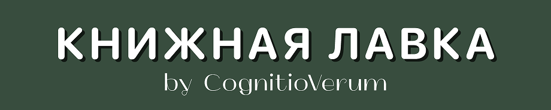
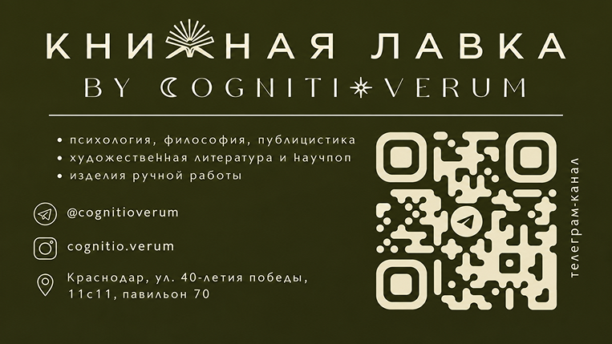
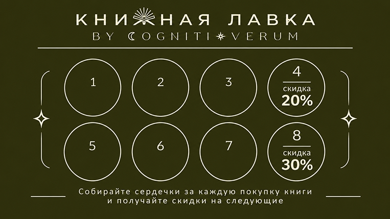
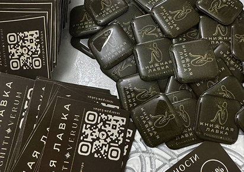

BY COGNITIO VERUM.




Для нашей с женой книжной лавки CognitioVerum в Краснодаре я разработал визитки, карточки программы лояльности, вывеску и печатные материалы. В оформлении использовал оливковые оттенки и элементы, отсылающие к литературе.